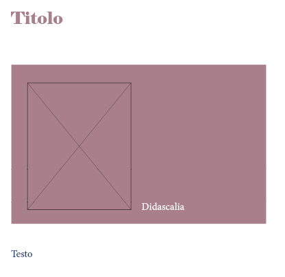

Ottimo! Ora ti chiedo di provare a ripetere i task precedenti, utilizzando EasyWCAG come strumento di supporto per la tua analisi.
Dai un’occhiata alla palette colori qui sotto e prova a valutarne l’accessibilità.
Quando hai terminato, torna qui per proseguire con i passaggi successivi.
Di seguito le informazioni importanti della palette, come puoi vedere nell’immagine sottostante:
- Titolo → 20 pt colore #a87f8a su sfondo #ffffff
- Didascalia → 12 pt colore #ffffff su sfondo #a87f8a
- Testo → 12 pt colore #1b4371 su sfondo #ffffff
